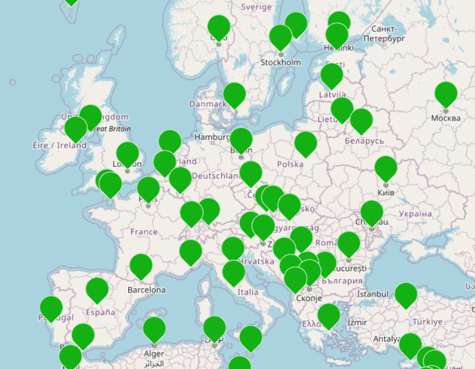

Traiter les données en tables¶
TD : Gérer ses séries¶
Mme NSI veut créer un répertoire pour stocker les séries qu'elle a visionnées et jusqu'à où est-ce qu'elle les a regardées.
A. Représentation des données¶
Voici les informations enregistrées dans une table SERIES, stockée dans un fichier CSV :
| nom | annee_debut | pays | dernier_diffuse | dernier_vu |
|---|---|---|---|---|
| Game of Thrones | 2011 | Etats-Unis | (8, 7) | (8, 7) |
| Kaamelott | 2005 | France | (6, 10) | (5, 3) |
| Sherlock | 2010 | Angleterre | (4, 3) | (4, 3) |
| Peaky Blinders | 2013 | Angleterre | (6, 6) | (5, 6) |
| Borgen | 2010 | Danemark | (4, 8) | (4, 7) |
| Breaking Bad | 2008 | Etats-Unis | (5, 16) | (5, 16) |
| Mad Men | 2006 | Etats-Unis | (7, 14) | (4, 3) |
| La Casa de Papel | 2017 | Espagne | (3, 10) | (2, 16) |
Note : Pour dernier_diffuse et dernier_vu, on indique le numéro de la saison, suivi de celui de l'épisode.
-
Quels sont les descripteurs (la liste des informations dont on dispose) de cette table ?
-
Pour chacun d'entre eux, identifier quel type de valeur est-ce que l'on peut utiliser pour les stocker informatiquement.
B. Recherches dans la table¶
On veut pouvoir faire des recherches dans cette table, pour obtenir des informations plus précises.
-
Quels sont les noms des séries produites en Angleterre ?
-
Quels sont les noms des séries produites aux Etats-Unis avant l'année 2010 ?
-
Comment obtenir les séries pour lesquelles il reste des épisodes à regarder ? Combien y-en a-t-il ?
Informatiquement, on formule ces recherches sous la forme de requêtes.
Par exemple :
sélectionner nom dans la table SERIES où pays = France
-
Formuler la recherche de la question 2 sous la forme d'une requête.
-
Formuler la recherche de la question 3 sous la forme d'une requête.
C. Cohérence des données¶
-
On veut rajouter à la table l'enregistrement suivant :
Succession, 2018, Etats-Unis, (3, 9), 4. Quel problème cela pose-t-il ? -
On veut rajouter à la table l'enregistrement suivant :
Succession, 2018, Etats-Unis, (3, 9), (4, 9). Quel problème cela pose-t-il ? -
De quoi faut-il donc s'assurer lorsque l'on ajoute de nouvelles données ?
D. Fusion de tables¶
Elle veut fusionner sa base de données avec celle d'une amie, qui est la suivante :
| nom | annee | dernier_diffuse | dernier_vu |
|---|---|---|---|
| Community | 2009 | (6, 13) | (1, 23) |
| House of the dragon | 2022 | (1, 10) | (1, 10) |
| Emily in Paris | 2020 | (3, 10) | (3, 10) |
-
Quelle est la liste des descripteurs de cette table ?
-
Quelle(s) modification(s) faut-il faire dans cette liste pour pouvoir la fusionner avec celle de Mme NSI ?
Cours¶
Pour traiter des données en grande quantité, il faut qu'elles aient une structure : c'est-à-dire que l'on ait les mêmes informations, sous la même forme, pour différents objets. Que l'on regroupe des données sur des animaux, des villes, des gens,... Cela permet de faire différents types de traitements de manière automatique.
Exemple
Un ensemble de morceaux de musique est stocké dans une table que l'on peut représenter comme ci-dessous.
| Titre | Artiste | Année |
|---|---|---|
| Enjoy the silence | Depeche Mode | 1990 |
| Blackbird | The Beatles | 1968 |
| Smells like teen spirits | Nirvana | 1991 |
A. Structurer les données et les indexer dans une table¶
A.1. Des données en tables¶
Les fichiers CSV
Les données peuvent être structurées dans des fichiers CSV, pour "Comma-Separated Values" : les données (valeurs) ont un séparateur, qui est souvent une virgule (mais peut être autre chose, comme un point-virgule).
Vocabulaire
Les caractéristiques qui décrivent ces données sont les descripteurs. Un élément d'une table est un ensemble de valeurs, chacune associée à à un descripteur et ayant un type (entier, booléen, caractères, flottant,...).
A.2. Importer et indexer les données¶
Les données d'un fichier CSV peuvent être importées pour être traitées automatiquement en Python :
with open(nom_fichier, mode='r') as fichier:
table = csv.reader(fichier, delimiter=",")
reader de la bibliothèque csv sépare les données qui sont entre des ,.
Une table peut être représentée en Python sous la forme d'un tableau de tableau, ou bien d'un tableau de p-uplets :
Exemple
# tableau à deux dimensions
titres = [['Enjoy the silence', 'Depeche Mode', '1990'],
['Blackbird', 'The Beatles', '1968'],
['Smells like teen spirits', 'Nirvana', '1991']]
# p-uplets
titres = [('Enjoy the silence', 'Depeche Mode', 1990),
('Blackbird', 'The Beatles', 1968),
('Smells like teen spirits', 'Nirvana', 1991)]
Quel est l'intérêt de chacun des types utilisé ?
Un tableau de tableaux permet de modifier ses éléments après les avoir déclarés, alors qu'un tableau de p-uplets permet de stocker différents types de variables.
Quelle instruction renvoie la valeur 'Nirvana' ?
titres[2][1] renvoie 'Nirvana'.
B. Recherche dans une table¶
B.1. Cohérence¶
Avant de commencer les recherches dans une (ou des) table(s), il faut vérifier que les données sont de bonne qualité, et repérer les problèmes s'il y en a.
Valeurs cohérentes
Chacune des valeurs a un type et une étendue de valeurs.
Exemple
Que faut-il tester pour notre table ?
Les valeurs des descripteurs Titre et Artiste sont des caractères, et celles du descripteur Année est un entier inférieur à l'année actuelle.
Quel algorithme peut-on utiliser ?
Entrée : table
Sortie : liste des erreurs
erreurs <- liste vide
on parcourt les lignes de la table avec l'indice i
si l'élément de la colonne testée de table[i] ne respecte pas le critere
on ajoute table[i] à la liste des erreurs
Il faut aussi vérifier que l'on a pas enregistré plusieurs fois les mêmes informations, c'est-à-dire rechercher les doublons.
Quel algorithme peut-on utiliser ?
Entrée : table
Sortie : liste des doublons
doublons <- liste vide
on parcourt les lignes de la table avec l'indice i
on parcourt à nouveau les lignes de la table avec l'indice j, à partir de i
si table[j] est égal à table[i]
on ajoute table[j] dans la liste des doublons
B.2. Sélection¶
Sélection de données
Filtrer des lignes des tables correspond à une opération de sélection.
Pour sélectionner ces lignes, on teste une condition exprimée dans la logique booléenne, c'est-à-dire avec les opérateurs booléens et et ou.
Exemple
Ecrire en Python la condition permettant de sélectionner les titres des Beatles parus avant 1970.
titres[i][1] == 'Beatles' and titres[i][2]<1970
Ecrire en Python la condition permettant de sélectionner les titres parus avant 1950 ou bien après 1990.
titres[i][2] < 1950 or titres[i][2] > 1990
C. Tri d'une table¶
Pour faire apparaître les informations selon un ordre voulu, on peut trier les données selon une colonne.
Exemple
Dans notre cas, on peut vouloir faire apparaître les titres :
- par ordre chronologique :
| Titre | Artiste | Année |
|---|---|---|
| Blackbird | The Beatles | 1968 |
| Enjoy the silence | Depeche Mode | 1990 |
| Smells like teen spirits | Nirvana | 1991 |
- par ordre alphabétique du nom de l'artiste :
| Titre | Artiste | Année |
|---|---|---|
| Enjoy the silence | Depeche Mode | 1990 |
| Smells like teen spirits | Nirvana | 1991 |
| Blackbird | The Beatles | 1968 |
Comment peut-on trier des caractères ?
On peut les trier en utilisant leur code ASCII (Unicode). Table
Pour faire le test 'mot' < 'tri' par exemple, m sera comparé avec t, et cette expression renverra True.
En déduire ce que renvoient '123'<'234' et '123'<'23'.
Les deux tests renvoient True. Il faut donc bien faire la conversion si on veut comparer des nombres (entiers ou flottant), car le résultat des tests sera différent avec des caractères.
D. Fusion de tables¶
On ne peut fusionner que deux tables qui ont les mêmes descripteurs, et que les valeurs sont compatibles entre elles.
Exemple
Est-ce le cas pour la table suivante ?
| Titre | Artiste | Année |
|---|---|---|
| Karma Police | Radiohead | 1997 |
| Where is my mind | Pixies | 1988 |
| This is love | PJ Harvey | 2000 |
Quel opérateur peut-on utiliser en Python sur les tableaux pour faire cette fusion ?
L'opérateur de concaténation + permet de fusionner des tableaux ou des p-uplets.
TP: Traitement de données géographiques¶

Télécharger le fichier capitales.csv stockant les données, et le fichier Python TP_Donnees_Geographiques.py qui servira de base à votre code. Stocker les deux fichiers dans votre dossier NSI.
Dans ce TP, nous allons traiter des données sur les capitales des pays du monde.
Introduction¶
-
Ouvrir le fichier avec un tableur. L'ouvrir en parallèle avec un éditeur de texte. Quel symbole apparaît dans le 2ème cas mais pas dans le 1er ?
-
Relever les caractéristiques qui se trouvent sur la première ligne : ce sont les descripteurs des données.
-
Il est possible de visualiser ces données sur une carte, avec le lien suivant : https://www.cahier-nsi.fr/livecsvmap2/?template=Seq4_exo1
A. Indexation des données¶
- Ouvrir le fichier
TP_Donnees_Geographiques.pydans votre IDE Python.
L'instruction import csv sert à importer des fonctions de la bibliothèque csv, permettant de lire et d'écrire dans des fichiers de ce format.
-
Analyser la fonction
lecture_fichier:-
elle ouvre le fichier avec
open(): quels sont les paramètres utilisés ? (faire une recherche Web si besoin) -
elle le convertit sous la forme de liste Python avec
csv.reader: quels sont les paramètres de cette fonction ?
-
-
Appeler cette fonction
lecture_fichierpour charger les données decapitales.csv, et stocker le résultat dans une variablecapitales. -
Visualiser le contenu de
capitalesdans la console : quel est son type ? .......................................... -
Quelle information récupère-t-on avec l'instruction
capitales[0]? ................................................................... -
Quelle instruction permet d'obtenir le nombre de capitales présentes dans ces données ? ...............................................
B. Tests de cohérence¶
Avant de pouvoir faire des recherches dans ces données, il faut vérifier qu'elles sont de bonne qualité, qu'elles sont cohérentes.
S'assurer que les données sont cohérentes, c'est s'assurer que les valeurs entrées ne sont pas aberrantes. Par exemple, si on stocke la taille d'une personne en centimètres, on ne veut pas avoir une valeur comme 1000.
La longitude varie entre -180 et +180, et la latitude entre -90 et 90 (ce sont des degrés). Vérifions que les valeurs stockées dans le vérifier sont cohérentes avec cela, en écrivant les fonctions test_latitude(table) et test_longitude(table) parcourant les lignes de table et vérifiant que la colonne correspondant à la latitude/la longitude contient une valeur dans les intervalles précisés.
On se base sur l'algorithme suivant :
Entrée : la table
Sortie : les enregistrement avec erreur sous la forme de liste
erreur <- liste vide
pour chaque indice i de 1 à la longueur de la table
si l'élement d'indice i de la table ne respecte pas l'intervalle donné
on l'ajoute à erreur
Note : Il faut convertir la latitude/longitude en float avec la syntaxe float(table[...]).
Tester la fonction. Trouvez-vous des erreurs ? .......................
C. Sélection¶
Nous pouvons maintenant faire des recherches sur ces données, et définir des fonctions différentes pour chacune de ces recherches, en fonction du critère utilisé. L'algorithme général qui sera utilisé à chaque fois est le suivant :
Entrée : la table
Sortie : la sélection sous la forme de liste
selection <- liste vide
pour chaque indice i de 1 à la longueur de la table
si l'élement d'indice i de la table respecte le critère
on l'ajoute à selection
-
Ecrire la fonction
recherche_1sélectionnant les capitales situées sur le continent nord-américain. -
Ecrire la fonction
recherche_2sélectionnant les capitales dont la latitude est inférieure à 0.
Note : N'oubliez pas la conversion de la latitude en float avec la syntaxe float(table[...]).
-
Ecrire la fonction
recherche_3sélectionnant les capitales dont la latitude est inférieure à 0 et la longitude est supérieure à 0. -
On peut aller plus vite que d'écrire des fonctions, en utilisant la compréhension. Ecrire les mêmes recherches que dans les questions 1, 2 et 3, mais avec une seule instruction, de la forme :
recherche1 = [ capitales[i] for i in range(.........) if .........................]
TP : Traitement de données de séries¶
Télécharger les fichiers series_1.csv et series_2.csv stockant les données, et le fichier Python TP_Series.py qui servira de base à votre code. Stocker les deux fichiers dans votre dossier NSI.
On veut gérer un répertoire de série, permettant de stocker les séries visionnées et jusqu'à quel épisode est-ce qu'elles ont été regardées. Voici un extrait de la table que nous allons traiter :
| nom | annee_debut | pays | dernier_diffuse | dernier_vu |
|---|---|---|---|---|
| Game of Thrones | 2011 | Etats-Unis | 8, 7 | 8, 7 |
| Kaamelott | 2005 | France | 6, 10 | 5, 3 |
| Sherlock | 2010 | Angleterre | 4, 3 | 4, 3 |
Pour dernier_diffuse et dernier_vu, on indique le numéro de la saison, suivi de celui de l'épisode.
A. Fusion de tables¶
-
Importer les données du fichier
series_1.csven appelant la fonctionlecture_fichieret stocker le résultat dans une variableserie_1. -
Visualiser le contenu de
serie_1avec la console. -
Avec quelle instruction accède-t-on aux descripteurs de la table ? Les lister ci-dessous.
-
Importer les données du fichier
series_2.csvet les stocker dans une variableserie_2. Visualiser son contenu avec la console. -
Ses descripteurs sont-ils les mêmes que ceux du premier fichier ?
-
Si deux tables ont les mêmes descripteurs, et des valeurs cohérentes, on peut les fusionner. On utilise pour cela l'opérateur
+qui permet de concatener des listes Python. Compléter la fonctionfusionne(table1, table2)fusionnant deux tablestable1ettable2, sans recopier deux fois les descripteurs. Pour cela, ils faut enlever la première ligne detable2: on peut utiliser la syntaxetab[ind:]ne prenant les lignes d'un tableautabqu'à partir de l'indiceind.
def fusionne(table1, table2):
return tab + ...
- Appeler la fonction
fusionnepour obtenir la fusion deserie_1etserie_2, stockée dans une variableseries.
B. Les doublons¶
Qu'il y ait plusieurs fois les mêmes informations, entrées par erreur, pose des problèmes en terme de stockage et peut biaiser les statistiques faites sur les données.
-
Compléter la fonction
trouve_doublons(table)prenant en paramètre une table sous la forme d'un tableau à 2 dimensions et renvoyant les lignes qui sont présentes plusieurs fois :def trouve_doublons(table): doublons = [] for i in range(......, ............): for j in range(i+1, len(table)): if ................................: doublons.append(....................) return doublons -
Appeler cette fonction sur la variable
seriespour obtenir les doublons de la table. Y en a-t-il ? -
L'instruction
del table[i]permet de supprimer la ligneidetable. Utiliser cette instruction pour écrire une fonctionsupprime_doublons(table)parcourant les lignes de la dernière à la première (sinon les valeurs prises paridans la boucle ne correspondraient plus) et supprimant un doublon à chaque fois qu'il est rencontré. -
Appeler cette fonction pour supprimer le(s) doublon(s) trouvés à la question 2. Stocker le résultat dans une variable
series_final. -
Nos données sont maintenant plus cohérentes, sauvegardons-les. Appeler la fonction
exporteprenant en paramètre la tableseries_finalqui sera stockée dans un fichier dont le nom estseries.csv.
C. Tri des données¶
Pour visualiser les différentes lignes de la table dans l'ordre que l'on veut, on peut appliquer un algorithme de tri, pour les trier en fonction d'une des colonnes.
-
On peut vouloir ranger les séries en fonction de l'ordre alphabétique de son nom, ou bien de son pays d'origine. On compare alors les caractères, qui seront triés en utilisant le code ASCII de chacun.
Appeler la fonctiontrie_caracteresprenant en paramètre la table et la colonne par rapport à laquelle on souhaite faire le tri, pour trier la table par rapport au nom de la série. -
Lorsque l'on veut trier par rapport à un nombre (entier ou flottant), il faut convertir la valeur d'abord, qui est une chaîne de caractères. Nous allons le faire avec la fonction
float(cela fonctionnera sur les entiers, et les flottants). Faire ce changement sur la condition duwhilepour obtenir la fonctiontrie_nombres.
...
while j>1 and ... :
table[j] = table[j-1]
j -= 1
Appeler la fonction pour trier les séries par rapport à leur année de création.
Pour aller plus loin...
Pour trier, on peut utiliser une fonction de fonction, sorted. Il faut lui préciser en paramètre ce qu'il faut trier, et comment (en fonction de quoi). Dans l'exemple suivant, on l'utilise pour trier en fonction de l'année de début, dans l'ordre croissant :
sorted(table[1:], key = lambda item: int(item[1]))
Quelle instruction utiliser pour trier en fonction du nom de la série ?